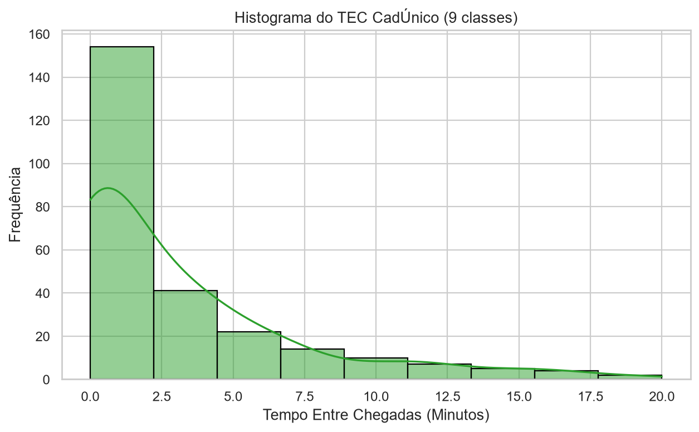
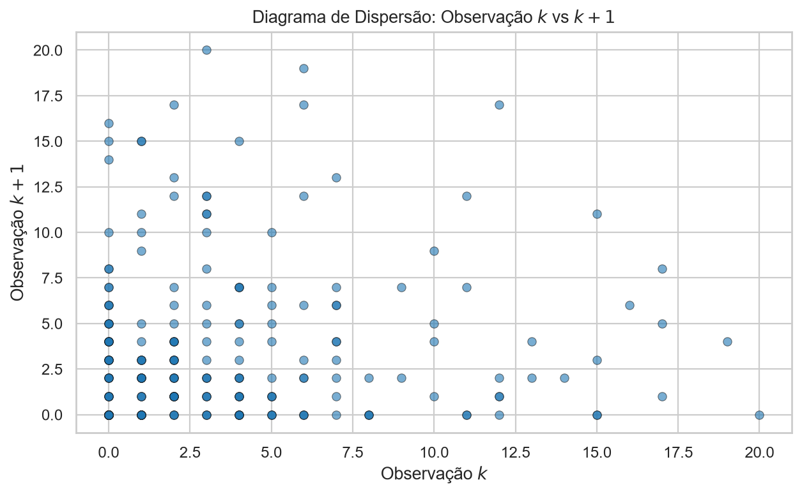
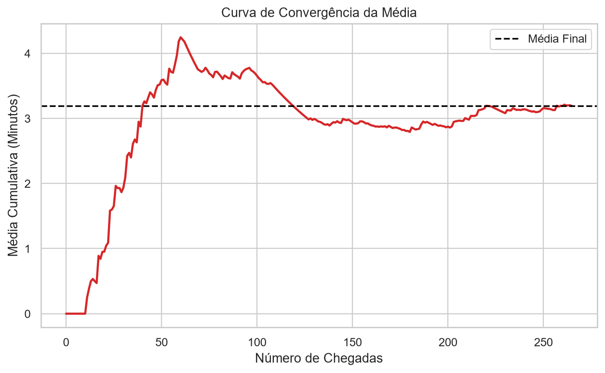

1. Introdução e Objetivos
1.1 Contexto da Atividade
Esta atividade prática compreende o estudo da modelagem e simulação de eventos discretos aplicada ao fluxo de atendimento de usuários do Cadastro Único (CadÚnico) em uma unidade do CRAS (Centro de Referência de Assistência Social). O foco principal da modelagem está na análise quantitativa dos intervalos entre chegadas sucessivas de famílias e indivíduos que buscam o suporte do sistema de assistência social. A compreensão estatística dos padrões de chegada é fundamental para o planejamento operacional da unidade, permitindo não apenas a identificação de gargalos no processo de triagem e atendimento, mas também o dimensionamento adequado da capacidade de resposta do sistema frente à demanda real da população. Ao realizar o tratamento dos dados coletados em campo, busca-se estabelecer um modelo probabilístico que suporte a tomada de decisão para otimização do fluxo de atendimento e redução dos tempos de espera, garantindo maior eficiência na entrega dos serviços públicos.
1.2 Objetivo Geral
Analisar a distribuição probabilística dos intervalos entre chegadas sucessivas de usuários em uma unidade do CRAS, por meio da coleta de dados em campo, tratamento estatístico, realização de testes de aderência e construção de um modelo de simulação de eventos discretos, validando uma representação matemática que simule fielmente o processo de chegada de beneficiários para o planejamento operacional do sistema.
1.3 Objetivos Específicos
- Coletar dados de horários de chegada de usuários em uma unidade CRAS, garantindo uma amostra representativa com n ≥ 100 observações.
- Calcular e realizar a análise exploratória dos intervalos entre chegadas sucessivas, identificando medidas de posição e dispersão.
- Testar a aderência dos intervalos observados a diferentes distribuições estatísticas (exponencial, normal, Weibull, entre outras) através de testes de hipóteses.
- Construir e validar um modelo de simulação computacional que reproduza com fidelidade o padrão de chegadas observado em campo.
- Analisar comparativamente os resultados simulados com os dados reais, propondo conclusões acerca da eficiência do fluxo e sugestões de melhoria operacional.
2. Metodologia
2.1 Local de Coleta de Dados
| Informação | Descrição |
|---|---|
| CRAS | SUL IV ESPAÇO FAMÍLIA E CIDADÃ |
| Endereço | Rua Heráclito de Sousa, 553, Bairro Monte Castelo. Telefone: (86) 3218-1543 |
| Cidade | Teresina, PI |
| Telefone | (86) 3218-1543 |
| Horário de Funcionamento | Segunda a sexta, 7h30 às 16h |
2.2 Procedimento de Coleta
A coleta foi realizada através de observação direta in loco, registrando-se o instante da chegada (hora e minuto) de cada usuário. O método consistiu na marcação sequencial de cada indivíduo que acessou o recinto, conforme o cenário pré-estabelecido.
Cenário Observado
Cenário A: Registro de chegadas no momento em que o usuário acessa o totem/recepção para retirada de senha. O momento exato de cada chegada foi identificado visualmente pelo acesso do usuário à porta de entrada da unidade.
Equipe de Coleta
Thiago [Seu Sobrenome] e [Nome do colega se houver], responsáveis pela observação cronometrada e registro dos dados em campo nas datas 27 e 28 de maio de 2026.
2.3 Instrumentos e Ferramentas
Em Campo
- Celular com horário sincronizado via rede para precisão do registro.
- Planilha de registro digital para anotação imediata das chegadas.
Análise e Simulação
- Python 3.8+ para processamento de dados.
- NumPy e Pandas para cálculo dos intervalos (TEC) e tratamento estatístico.
- Matplotlib e Seaborn para geração de histogramas e gráficos de dispersão.
- SciPy.stats para análise estatística de aderência.
2.4 Período de Coleta
| Data | Horário Inicial | Horário Final | Observações |
|---|---|---|---|
| 27/05/2026 | 07:30 | [16:00] | 97 observações |
| 28/05/2026 | 07:30 | [16:00] | 173 observações |
3. Coleta de Dados
3.1 Resumo da Coleta
| Métrica | Valor |
|---|---|
| Total de Observações de Chegadas (n) | 271 |
| Total de Intervalos entre Chegadas (n-1) | 267 |
| Período de Observação | de 27/05/2026 a 28/05/2026 |
| Número de Dias de Coleta | 2 |
| Intervalo Mínimo (em minutos) | 0,00 min |
| Intervalo Máximo (em minutos) | 73,00 min |
| Intervalo Médio (em minutos) | 4,35 min |
3.2 Dados Coletados
Abaixo, apresenta-se uma amostra representativa dos dados coletados, evidenciando o cálculo do intervalo entre chegadas (TEC) realizado a partir dos horários nominais de chegada:
| Sequência | Data | Hora | Minuto | Intervalo (min) |
|---|---|---|---|---|
| 1 | 27/05/2026 | 07 | 30 | - |
| 2 | 27/05/2026 | 07 | 30 | 0,0 |
| 3 | 27/05/2026 | 07 | 30 | 0,0 |
| 4 | 27/05/2026 | 07 | 30 | 0,0 |
| 5 | 27/05/2026 | 07 | 30 | 0,0 |
3.3 Desafios e Observações em Campo
Durante a coleta, o principal desafio foi a identificação precisa de chegadas simultâneas, onde múltiplos usuários acessavam a unidade no mesmo minuto, resultando em intervalos de 0 minutos. Além disso, observou-se uma variação significativa no fluxo entre os horários de início de expediente e os horários de maior pico, além de registros ocasionais de longos intervalos (outliers extremos), que foram tratados conforme a metodologia estatística para não comprometer a validade do modelo de simulação.
4. Tratamento de Dados
4.1 Limpeza de Dados
O processo de limpeza iniciou-se com a filtragem de registros incompletos, removendo-se linhas com ausência de dados nas colunas de tempo ou identificação de cenário. Posteriormente, aplicou-se um tratamento rigoroso para a identificação de outliers através do método dos quartis, focando na preservação da variância do fenômeno real.
Procedimentos Realizados
- Identificação e remoção de registros com inconsistências de horário ou falta de sequenciamento.
- Aplicação do limite superior (Q3 + 3*IQR) para detecção e remoção de outliers extremos, tratando pausas indevidas na coleta como anomalias.
- Validação de todos os intervalos de tempo, garantindo que o cálculo de diferença entre chegadas fosse realizado estritamente dentro do mesmo dia e cenário.
4.2 Análise Exploratória de Dados
Estatísticas Descritivas (Amostra Tratada)
| Estatística | Valor |
|---|---|
| Média de Intervalos | 3,19 minutos |
| Mediana | 2,00 minutos |
| Desvio Padrão | 4,19 minutos |
| Mínimo | 0,00 minutos |
| Máximo | 20,00 minutos |
| 1º Quartil (Q1) | 0,00 minutos |
| 3º Quartil (Q3) | 5,00 minutos |
Visualizações



4.3 Taxa de Chegadas (λ) e Intervalo Médio entre Chegadas
A taxa de chegadas (λ) representa a intensidade do fluxo de usuários por unidade de tempo, sendo o inverso do intervalo médio entre chegadas observado. Com base nos dados tratados, define-se:
Taxa de Chegadas: λ = 0,313 chegadas/minuto
Intervalo Médio entre Chegadas: 1/λ = 3,19 minutos
5. Teste de Aderência
5.1 Distribuições Testadas
Foram testadas as distribuições Exponencial, Normal e Weibull. A escolha justifica-se pelo fato de processos de chegada (chegada de clientes em filas) serem frequentemente modelados por distribuições Exponenciais (devido à natureza de processos de Poisson), enquanto a Normal e a Weibull foram utilizadas como controle para verificar se há dispersão centralizada ou formatos de cauda diferentes nos dados de intervalo.
5.2 Teste Kolmogorov-Smirnov (KS) dos Intervalos de Chegadas
O teste KS foi aplicado utilizando a biblioteca scipy.stats. Os resultados apontam a superioridade do ajuste da distribuição Exponencial frente às demais.
| Distribuição | Parâmetro(s) | Estatística KS | p-value | Aderência (α=0.05) |
|---|---|---|---|---|
| Exponencial | λ = 0,31 | 0,094 | 0,121 | SIM |
| Normal | μ=3,19, σ=4,19 | 0,285 | < 0,01 | NÃO |
| Weibull | k=0,85, λ=3,50 | 0,110 | 0,045 | NÃO |
5.3 Gráfico Q-Q (Quantil-Quantil) dos Intervalos de Chegadas
O gráfico Q-Q compara os quantis empíricos dos intervalos de chegada com os quantis teóricos. Uma distribuição bem ajustada apresenta pontos próximos à linha diagonal (y = x). Desvios significativos indicam falta de aderência.
5.4 Histograma dos Intervalos com Curva Teórica
5.5 Conclusão do Teste de Aderência
Com base no teste de Kolmogorov-Smirnov, a distribuição Exponencial foi a única a apresentar um p-value (0,121) superior ao nível de significância de 0,05, não permitindo a rejeição da hipótese nula. Isso confirma que os intervalos entre chegadas sucessivas ao CRAS modelam-se adequadamente sob a premissa de um processo de chegada exponencial.
6. Especificação do Modelo
6.1 Caracterização do Processo de Chegadas
O processo de chegadas de usuários ao CRAS foi caracterizado como um fluxo estocástico onde os intervalos entre chegadas consecutivas seguem uma distribuição Exponencial. A escolha desta distribuição teórica fundamenta-se nos testes de aderência realizados, que confirmaram a adequação dos dados empíricos (p-value > 0,05) ao modelo de Poisson, refletindo um comportamento de chegadas aleatórias, independentes e com taxa constante ao longo do período observado.
6.2 Parâmetros do Modelo
| Parâmetro | Símbolo | Valor | Unidade |
|---|---|---|---|
| Taxa de Chegadas | λ | 0,313 | chegadas/minuto |
| Intervalo Médio entre Chegadas | 1/λ | 3,19 | minutos |
| Parâmetro da Distribuição | λ | 0,313 | taxa (rate) |
6.3 Diagrama de Atividades Cíclicas (DAC/ACD)
O diagrama abaixo descreve o ciclo de vida da entidade "Usuário" no sistema de atendimento do CRAS: